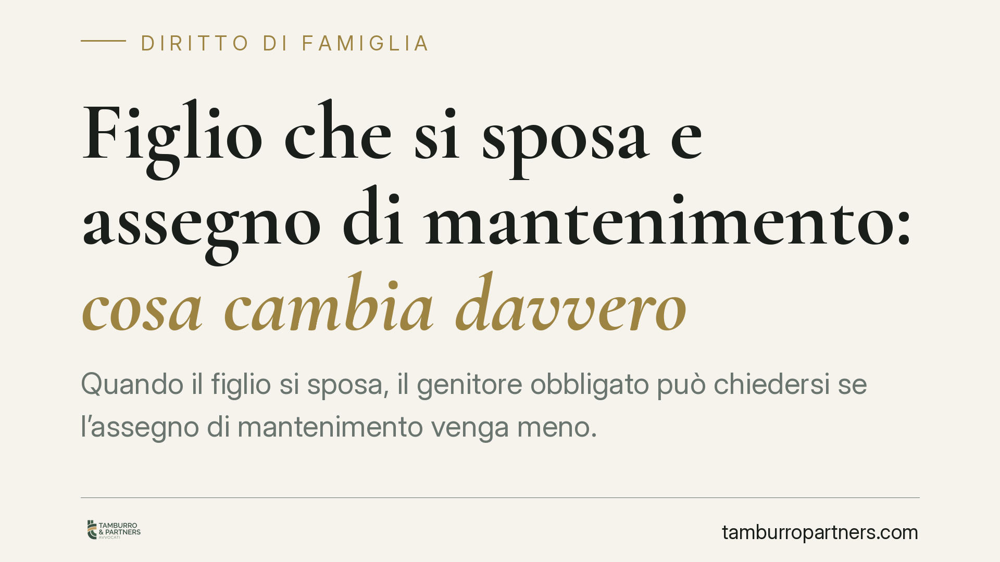

Figlio che si sposa e assegno di mantenimento: cosa cambia davvero
Quando il figlio si sposa, il genitore obbligato può chiedersi se l'assegno di mantenimento venga meno. Una pronuncia di merito del Tribunale di Palermo torna sul tema, ma attenzione: la cessazione dell'obbligo non è automatica e la restituzione delle somme già versate è tutt'altro che scontata. Vediamo cosa dice il diritto e come muoversi senza esporsi a rischi.

Il caso e il principio
Una pronuncia di merito del Tribunale di Palermo (sentenza non ancora verificabile nei suoi estremi definitivi) è tornata su una questione frequente: il matrimonio del figlio maggiorenne incide sull'obbligo di mantenimento a carico del genitore.
L'idea di fondo è intuitiva. Con il matrimonio, il figlio costituisce un nuovo nucleo familiare e, di regola, acquisisce o si presume raggiunga l'autonomia economica. Ma dal piano del buon senso a quello giuridico il passaggio richiede cautela: la cessazione dell'obbligo non opera in via automatica e non travolge da sola il titolo esecutivo esistente.
Inquadramento normativo
L'obbligo di mantenimento del figlio maggiorenne non si confonde con l'obbligo alimentare. Il mantenimento mira a garantire un tenore di vita adeguato fino al raggiungimento dell'indipendenza economica; gli alimenti, invece, presuppongono lo stato di bisogno e sono disciplinati dall'art. 433 c.c., che individua l'ordine degli obbligati.
Il matrimonio del figlio fa ragionevolmente presumere il venir meno di quella dipendenza economica che giustifica il mantenimento. Si tratta però di una presunzione, non di un fatto estintivo che opera da sé: in presenza di contestazione, la cessazione va accertata e, soprattutto, il titolo esecutivo (sentenza, verbale di separazione o divorzio) resta efficace finché non viene modificato o neutralizzato in sede giudiziale.
Da qui due profili da tenere distinti. Il profilo sostanziale: l'obbligo può considerarsi venuto meno al mutare dei presupposti. Il profilo esecutivo: finché esiste un titolo, l'ex coniuge beneficiario può in teoria pretenderne l'adempimento, e il genitore obbligato deve attivarsi per bloccarlo.
Il nodo della restituzione: niente automatismi
Qui serve particolare prudenza. L'art. 2033 c.c. disciplina la ripetizione dell'indebito, cioè la restituzione di ciò che è stato pagato senza doverlo. Tuttavia, la giurisprudenza di legittimità è da tempo orientata a limitare fortemente la ripetibilità delle somme versate a titolo di mantenimento quando siano già state consumate per far fronte alle normali esigenze di vita.
La ratio è di tutela: quelle somme hanno natura sostanzialmente assistenziale e si presumono spese per il sostentamento di chi le ha ricevute. Pretenderne la restituzione significherebbe, di fatto, privare retroattivamente il beneficiario di mezzi già impiegati.
In concreto, dunque, l'eventuale richiesta di rimborso delle mensilità versate dopo il matrimonio del figlio non è né automatica né pacifica. Va valutata caso per caso, tenendo conto dell'orientamento prevalente che tende a escludere la ripetizione del mantenimento ordinario già erogato.
Implicazioni pratiche per il genitore obbligato
Per chi versa l'assegno, il messaggio è chiaro: non interrompere i pagamenti d'iniziativa confidando in un automatismo. Finché il titolo esecutivo è efficace, la sospensione unilaterale espone al rischio di azioni esecutive e di aggravi.
Lo strumento difensivo, in caso di esecuzione forzata avviata sul vecchio titolo, è l'opposizione all'esecuzione prevista dall'art. 615 c.p.c., con cui si contesta il diritto della controparte a procedere perché i presupposti sostanziali dell'obbligo sono venuti meno.
Resta inoltre fermo che il matrimonio non chiude ogni scenario: in situazioni particolari di comprovata non autosufficienza, la valutazione può essere diversa.
Cosa fare in concreto
- Non sospendere i pagamenti d'iniziativa. Finché esiste un titolo esecutivo efficace, l'interruzione unilaterale è rischiosa.
- Raccogliere la prova del matrimonio e dell'autonomia del figlio (certificato, elementi sulla nuova situazione economica e abitativa).
- Promuovere il procedimento di modifica delle condizioni per ottenere l'accertamento formale della cessazione dell'obbligo.
- Verificare con prudenza l'eventuale restituzione: valutare se le somme versate dopo il matrimonio siano ripetibili, considerando l'orientamento restrittivo sulla ripetibilità del mantenimento già consumato.
- In caso di esecuzione sul vecchio titolo, valutare tempestivamente l'opposizione ex art. 615 c.p.c.
Una pronuncia di merito, non un principio consolidato
È bene ricordare che si tratta di una decisione di merito, priva di efficacia vincolante generale. Le soluzioni concrete dipendono dal titolo in essere, dalla condotta tenuta e dalle specifiche circostanze del figlio e dell'ex coniuge. Prima di qualunque decisione operativa è opportuno un esame del singolo caso.
---
*Contributo informativo a cura di Tamburro & Partners - Avv. Giuseppe Tamburro. Non costituisce parere legale.*
Ogni famiglia ha il suo equilibrio.
Separazione, divorzio, affidamento, assegno: se vuoi un confronto riservato su una specifica situazione, scrivi allo studio. Ti rispondiamo entro un giorno lavorativo.